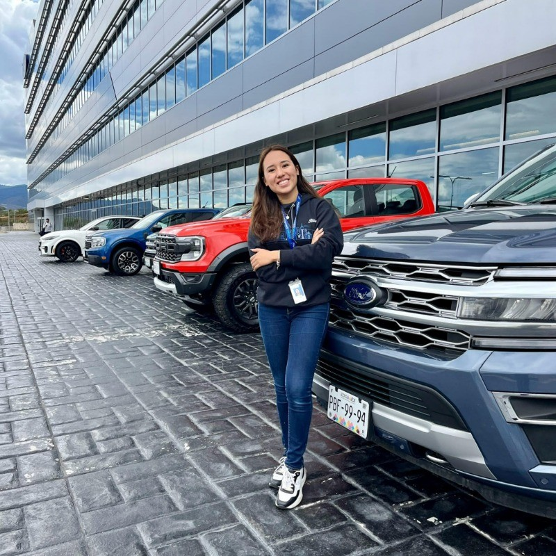

01
FOUNDATION
Mechatronics Engineering
A multidisciplinary base spanning mechanical design, electronics, control and automation.
MechanicsControlsAutomation
MECHATRONICS · AUTOMATION · SUSTAINABLE SYSTEMS
I am Camila Martínez, a Mexican Mechatronics Engineer and EMSSE master's student connecting mechanical design, automation and data to build more efficient, thoughtful systems.

My path in mechatronics taught me to see the complete system: the mechanics that make it move, the controls that make it respond and the information that helps it improve.
Studying in international environments has expanded that perspective toward energy, sustainability and engineering decisions that create value beyond the technical solution.
I bring structured thinking, genuine curiosity and the drive to turn complex challenges into clear next steps.
A growing trajectory combining technical depth, international learning and practical problem-solving.
FOUNDATION
A multidisciplinary base spanning mechanical design, electronics, control and automation.
ADVANCED STUDY
Developing a broader view of sustainable systems, energy and the decisions shaping tomorrow's industry.
My experience connects physical systems, digital tools and the evidence needed to make better engineering decisions.
DESIGN & ANALYSIS
01Working from requirements toward structured concepts, calculated capacity and simulation-backed decisions—while keeping analytical results distinct from physical validation.
AUTOMATION & OPERATIONS
02Using automation and monitoring tools to improve visibility, structure technical information and support reliable operations.
SYSTEMS THINKING
03Approaching engineering problems as complete systems, communicating assumptions clearly and translating analysis into actionable next steps.
Looking toward a six-month curricular internship where rigorous engineering and sustainable impact meet.
Designing systems that are efficient, observable and useful to the people operating them.
Bringing systems thinking to the technical and environmental challenges shaping industry.
Turning technical performance into information that supports confident decisions.
LET'S BUILD SOMETHING MEANINGFUL
LinkedIn, email and CV will be connected as soon as their exact details are provided.